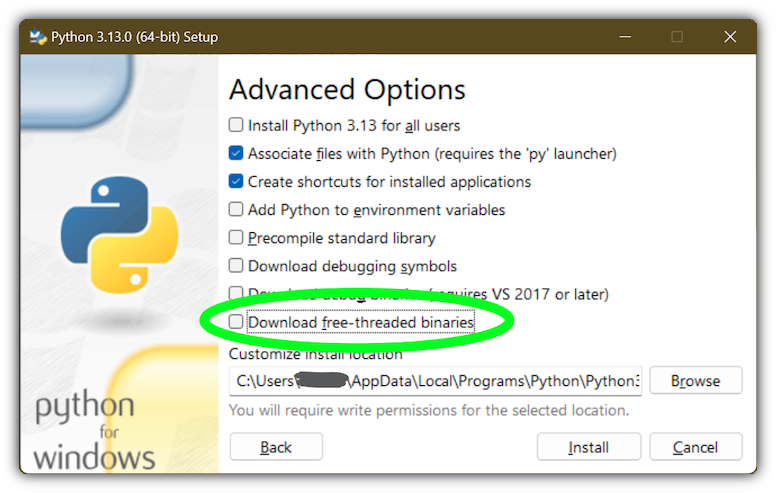

4. Uso de Python en Windows¶
Este documento pretende dar una visión general del comportamiento específico de Windows que se debería conocer al usar Python en Microsoft Windows.
Unlike most Unix systems and services, Windows does not include a system supported installation of Python. Instead, Python can be obtained from a number of distributors, including directly from the CPython team. Each Python distribution will have its own benefits and drawbacks, however, consistency with other tools you are using is generally a worthwhile benefit. Before committing to the process described here, we recommend investigating your existing tools to see if they can provide Python directly.
To obtain Python from the CPython team, use the Python Install Manager. This is a standalone tool that makes Python available as global commands on your Windows machine, integrates with the system, and supports updates over time. You can download the Python Install Manager from python.org/downloads or through the Microsoft Store app.
Once you have installed the Python Install Manager, the global python
command can be used from any terminal to launch your current latest version of
Python. This version may change over time as you add or remove different
versions, and the py list command will show which is current.
In general, we recommend that you create a virtual environment
for each project and run <env>\Scripts\Activate in your terminal to use it.
This provides isolation between projects, consistency over time, and ensures
that additional commands added by packages are also available in your session.
Create a virtual environment using python -m venv <env path>.
If the python or py commands do not seem to be working, please see the
Troubleshooting section below. There are
sometimes additional manual steps required to configure your PC.
Apart from using the Python install manager, Python can also be obtained as NuGet packages. See El paquete de nuget.org below for more information on these packages.
The embeddable distros are minimal packages of Python suitable for embedding into larger applications. They can be installed using the Python install manager. See El paquete incrustable below for more information on these packages.
4.1. Python Install Manager¶
4.1.1. Installation¶
The Python install manager can be installed from the Microsoft Store app or downloaded and installed from python.org/downloads. The two versions are identical.
To install through the Store, simply click «Install». After it has completed,
open a terminal and type python to get started.
To install the file downloaded from python.org, either double-click and select
«Install», or run Add-AppxPackage <path to MSIX> in Windows Powershell.
After installation, the python, py, and pymanager commands should be
available. If you have existing installations of Python, or you have modified
your PATH variable, you may need to remove them or undo the
modifications. See Troubleshooting for more help with fixing
non-working commands.
When you first install a runtime, you will likely be prompted to add a directory
to your PATH. This is optional, if you prefer to use the py
command, but is offered for those who prefer the full range of aliases (such
as python3.14.exe) to be available. The directory will be
%LocalAppData%\Python\bin by default, but may be customized by an
administrator. Click Start and search for «Edit environment variables for your
account» for the system settings page to add the path.
Each Python runtime you install will have its own directory for scripts. These
also need to be added to PATH if you want to use them.
The Python install manager will be automatically updated to new releases. This does not affect any installs of Python runtimes. Uninstalling the Python install manager does not uninstall any Python runtimes.
If you are not able to install an MSIX in your context, for example, you are using automated deployment software that does not support it, or are targeting Windows Server 2019, please see Advanced Installation below for more information.
4.1.2. Basic Use¶
The recommended command for launching Python is python, which will either
launch the version requested by the script being launched, an active virtual
environment, or the default installed version, which will be the latest stable
release unless configured otherwise. If no version is specifically requested and
no runtimes are installed at all, the current latest release will be installed
automatically.
For all scenarios involving multiple runtime versions, the recommended command
is py. This may be used anywhere in place of python or the older
py.exe launcher. By default, py matches the behaviour of python, but
also allows command line options to select a specific version as well as
subcommands to manage installations. These are detailed below.
Because the py command may already be taken by the previous version, there
is also an unambiguous pymanager command. Scripted installs that are
intending to use Python install manager should consider using pymanager, due
to the lower chance of encountering a conflict with existing installs. The only
difference between the two commands is when running without any arguments:
py will install and launch your default interpreter, while pymanager
will display help (pymanager exec ... provides equivalent behaviour to
py ...).
Each of these commands also has a windowed version that avoids creating a
console window. These are pyw, pythonw and pymanagerw. A python3
command is also included that mimics the python command. It is intended to
catch accidental uses of the typical POSIX command on Windows, but is not meant
to be widely used or recommended.
To launch your default runtime, run python or py with the arguments you
want to be passed to the runtime (such as script files or the module to launch):
$> py
...
$> python my-script.py
...
$> py -m this
...
The default runtime can be overridden with the PYTHON_MANAGER_DEFAULT
environment variable, or a configuration file. See Configuration for
information about configuration settings.
To launch a specific runtime, the py command accepts a -V:<TAG> option.
This option must be specified before any others. The tag is part or all of the
identifier for the runtime; for those from the CPython team, it looks like the
version, potentially with the platform. For compatibility, the V: may be
omitted in cases where the tag refers to an official release and starts with
3.
$> py -V:3.14 ...
$> py -V:3-arm64 ...
Runtimes from other distributors may require the company to be included as
well. This should be separated from the tag by a slash, and may be a prefix.
Specifying the company is optional when it is PythonCore, and specifying the
tag is optional (but not the slash) when you want the latest release from a
specific company.
$> py -V:Distributor\1.0 ...
$> py -V:distrib/ ...
If no version is specified, but a script file is passed, the script will be inspected for a shebang line. This is a special format for the first line in a file that allows overriding the command. See Shebang lines for more information. When there is no shebang line, or it cannot be resolved, the script will be launched with the default runtime.
If you are running in an active virtual environment, have not requested a
particular version, and there is no shebang line, the default runtime will be
that virtual environment. In this scenario, the python command was likely
already overridden and none of these checks occurred. However, this behaviour
ensures that the py command can be used interchangeably.
When you launch either python or py but do not have any runtimes
installed, and the requested version is the default, it will be installed
automatically and then launched. Otherwise, the requested version will be
installed if automatic installation is configured (most likely by setting
PYTHON_MANAGER_AUTOMATIC_INSTALL to true), or if the py exec or
pymanager exec forms of the command were used.
4.1.3. Command Help¶
The py help command will display the full list of supported commands, along
with their options. Any command may be passed the -? option to display its
help, or its name passed to py help.
$> py help
$> py help install
$> py install /?
All commands support some common options, which will be shown by py help.
These options must be specified after any subcommand. Specifying -v or
--verbose will increase the amount of output shown, and -vv will
increase it further for debugging purposes. Passing -q or --quiet will
reduce output, and -qq will reduce it further.
The --config=<PATH> option allows specifying a configuration file to
override multiple settings at once. See Configuration below for more
information about these files.
4.1.4. Listing Runtimes¶
$> py list [-f=|--format=<FMT>] [-1|--one] [--online|-s=|--source=<URL>] [<TAG>...]
The list of installed runtimes can be seen using py list. A filter may be
added in the form of one or more tags (with or without company specifier), and
each may include a <, <=, >= or > prefix to restrict to a range.
A range of formats are supported, and can be passed as the --format=<FMT> or
-f <FMT> option. Formats include table (a user friendly table view),
csv (comma-separated table), json (a single JSON blob), jsonl (one
JSON blob per result), exe (just the executable path), prefix (just the
prefix path).
The --one or -1 option only displays a single result. If the default
runtime is included, it will be the one. Otherwise, the «best» result is shown
(«best» is deliberately vaguely defined, but will usually be the most recent
version). The result shown by py list --one <TAG> will match the runtime
that would be launched by py -V:<TAG>.
The --only-managed option excludes results that were not installed by the
Python install manager. This is useful when determining which runtimes may be
updated or uninstalled through the py command.
The --online option is short for passing --source=<URL> with the default
source. Passing either of these options will search the online index for
runtimes that can be installed. The result shown by py list --online --one
<TAG> will match the runtime that would be installed by py install <TAG>.
$> py list --online 3.14
For compatibility with the old launcher, the --list, --list-paths,
-0 and -0p commands (e.g. py -0p) are retained. They do not allow
additional options, and will produce legacy formatted output.
4.1.5. Installing Runtimes¶
$> py install [-s=|--source=<URL>] [-f|--force] [-u|--update] [--dry-run] [<TAG>...]
New runtime versions may be added using py install. One or more tags may be
specified, and the special tag default may be used to select the default.
Ranges are not supported for installation.
The --source=<URL> option allows overriding the online index that is used to
obtain runtimes. This may be used with an offline index, as shown in
Offline Installs.
Passing --force will ignore any cached files and remove any existing install
to replace it with the specified one.
Passing --update will replace existing installs if the new version is newer.
Otherwise, they will be left. If no tags are provided with --update, all
installs managed by the Python install manager will be updated if newer versions
are available. Updates will remove any modifications made to the install,
including globally installed packages, but virtual environments will continue to
work.
Passing --dry-run will generate output and logs, but will not modify any
installs.
In addition to the above options, the --target option will extract the
runtime to the specified directory instead of doing a normal install. This is
useful for embedding runtimes into larger applications.
$> py install ... [-t=|--target=<PATH>] <TAG>
4.1.6. Offline Installs¶
To perform offline installs of Python, you will need to first create an offline index on a machine that has network access.
$> py install --download=<PATH> ... <TAG>...
The --download=<PATH> option will download the packages for the listed tags
and create a directory containing them and an index.json file suitable for
later installation. This entire directory can be moved to the offline machine
and used to install one or more of the bundled runtimes:
$> py install --source="<PATH>\index.json" <TAG>...
The Python install manager can be installed by downloading its installer and moving it to another machine before installing.
Alternatively, the ZIP files in an offline index directory can simply be transferred to another machine and extracted. This will not register the install in any way, and so it must be launched by directly referencing the executables in the extracted directory, but it is sometimes a preferable approach in cases where installing the Python install manager is not possible or convenient.
In this way, Python runtimes can be installed and managed on a machine without access to the internet.
4.1.7. Uninstalling Runtimes¶
$> py uninstall [-y|--yes] <TAG>...
Runtimes may be removed using the py uninstall command. One or more tags
must be specified. Ranges are not supported here.
The --yes option bypasses the confirmation prompt before uninstalling.
Instead of passing tags individually, the --purge option may be specified.
This will remove all runtimes managed by the Python install manager, including
cleaning up the Start menu, registry, and any download caches. Runtimes that
were not installed by the Python install manager will not be impacted, and
neither will manually created configuration files.
$> py uninstall [-y|--yes] --purge
The Python install manager can be uninstalled through the Windows «Installed
apps» settings page. This does not remove any runtimes, and they will still be
usable, though the global python and py commands will be removed.
Reinstalling the Python install manager will allow you to manage these runtimes
again. To completely clean up all Python runtimes, run with --purge before
uninstalling the Python install manager.
4.1.8. Configuration¶
Python install manager is configured with a hierarchy of configuration files, environment variables, command-line options, and registry settings. In general, configuration files have the ability to configure everything, including the location of other configuration files, while registry settings are administrator-only and will override configuration files. Command-line options override all other settings, but not every option is available.
This section will describe the defaults, but be aware that modified or overridden installs may resolve settings differently.
A global configuration file may be configured by an administrator, and would be
read first. The user configuration file is stored at
%AppData%\Python\pymanager.json (by default) and is read next,
overwriting any settings from earlier files. An additional configuration file
may be specified as the PYTHON_MANAGER_CONFIG environment variable or the
--config command line option (but not both).
The following settings are those that are considered likely to be modified in normal use. Later sections list those that are intended for administrative customization.
Standard configuration options
Config Key |
Environment Variable |
Descripción |
|---|---|---|
|
|
The preferred default version to launch or install. By default, this is interpreted as the most recent non-prerelease version from the CPython team. |
|
|
The preferred default platform to launch or install.
This is treated as a suffix to the specified tag, such that |
|
|
The location where log files are written.
By default, |
|
|
True to allow automatic installs when specifying a particular runtime to launch. By default, true. |
|
|
True to allow listing and launching runtimes that were not installed by the Python install manager, or false to exclude them. By default, true. |
|
|
True to allow shebangs in |
|
|
Set the default level of output (0-50). By default, 20. Lower values produce more output. The environment variables are boolean, and may produce additional output during startup that is later suppressed by other configuration. |
|
|
True to confirm certain actions before taking them (such as uninstall), or false to skip the confirmation. By default, true. |
|
|
Override the index feed to obtain new installs from. |
|
|
Specify the default format used by the |
Dotted names should be nested inside JSON objects, for example, list.format
would be specified as {"list": {"format": "table"}}.
4.1.9. Shebang lines¶
If the first line of a script file starts with #!, it is known as a
«shebang» line. Linux and other Unix like operating systems have native
support for such lines and they are commonly used on such systems to indicate
how a script should be executed. The python and py commands allow the
same facilities to be used with Python scripts on Windows.
To allow shebang lines in Python scripts to be portable between Unix and Windows, a number of “virtual” commands are supported to specify which interpreter to use. The supported virtual commands are:
/usr/bin/env <ALIAS>/usr/bin/env -S <ALIAS>/usr/bin/<ALIAS>/usr/local/bin/<ALIAS><ALIAS>
Por ejemplo, si la primera línea del script comienza con
#! /usr/bin/python
The default Python or an active virtual environment will be located and used.
As many Python scripts written to work on Unix will already have this line,
you should find these scripts can be used by the launcher without modification.
If you are writing a new script on Windows which you hope will be useful on
Unix, you should use one of the shebang lines starting with /usr.
Any of the above virtual commands can have <ALIAS> replaced by an alias from
an installed runtime. That is, any command generated in the global aliases
directory (which you may have added to your PATH environment variable)
can be used in a shebang, even if it is not on your PATH. This allows
the use of shebangs like /usr/bin/python3.12 to select a particular runtime.
If no runtimes are installed, or if automatic installation is enabled, the requested runtime will be installed if necessary. See Configuration for information about configuration settings.
The /usr/bin/env form of shebang line will also search the PATH
environment variable for unrecognized commands. This corresponds to the
behaviour of the Unix env program, which performs the same search, but
prefers launching known Python commands. A warning may be displayed when
searching for arbitrary executables, and this search may be disabled by the
shebang_can_run_anything configuration option.
Shebang lines that do not match any of patterns are treated as Windows
executable paths that are absolute or relative to the directory containing the
script file. This is a convenience for Windows-only scripts, such as those
generated by an installer, since the behavior is not compatible with Unix-style
shells. These paths may be quoted, and may include multiple arguments, after
which the path to the script and any additional arguments will be appended.
This functionality may be disabled by the shebang_can_run_anything
configuration option.
Nota
The behaviour of shebangs in the Python install manager is subtly different
from the previous py.exe launcher, and the old configuration options no
longer apply. If you are specifically reliant on the old behaviour or
configuration, we recommend keeping the legacy launcher. It may be
downloaded independently
and installed on its own. The legacy launcher’s py command will override
PyManager’s one, and you will need to use pymanager commands for
installing and uninstalling.
4.1.10. Advanced Installation¶
For situations where an MSIX cannot be installed, such as some older
administrative distribution platforms, there is an MSI available from the
python.org downloads page. This MSI has no user interface, and can only perform
per-machine installs to its default location in Program Files. It will attempt
to modify the system PATH environment variable to include this install
location, but be sure to validate this on your configuration.
Nota
Windows Server 2019 is the only version of Windows that CPython supports that does not support MSIX. For Windows Server 2019, you should use the MSI.
Be aware that the MSI package does not bundle any runtimes, and so is not suitable for installs into offline environments without also creating an offline install index. See Offline Installs and Administrative Configuration for information on handling these scenarios.
Runtimes installed by the MSI are shared with those installed by the MSIX, and
are all per-user only. The Python install manager does not support installing
runtimes per-machine. To emulate a per-machine install, you can use py install
--target=<shared location> as administrator and add your own system-wide
modifications to PATH, the registry, or the Start menu.
When the MSIX is installed, but commands are not available in the PATH
environment variable, they can be found under
%LocalAppData%\Microsoft\WindowsApps\PythonSoftwareFoundation.PythonManager_3847v3x7pw1km
or
%LocalAppData%\Microsoft\WindowsApps\PythonSoftwareFoundation.PythonManager_qbz5n2kfra8p0,
depending on whether it was installed from python.org or through the Windows
Store. Attempting to run the executable directly from Program Files is not
recommended.
To programmatically install the Python install manager, it is easiest to use WinGet, which is included with all supported versions of Windows:
$> winget install 9NQ7512CXL7T -e --accept-package-agreements --disable-interactivity
# Optionally run the configuration checker and accept all changes
$> py install --configure -y
To download the Python install manager and install on another machine, the
following WinGet command will download the required files from the Store to your
Downloads directory (add -d <location> to customize the output location).
This also generates a YAML file that appears to be unnecessary, as the
downloaded MSIX can be installed by launching or using the commands below.
$> winget download 9NQ7512CXL7T -e --skip-license --accept-package-agreements --accept-source-agreements
To programmatically install or uninstall an MSIX using only PowerShell, the Add-AppxPackage and Remove-AppxPackage PowerShell cmdlets are recommended:
$> Add-AppxPackage C:\Downloads\python-manager-25.0.msix
...
$> Get-AppxPackage PythonSoftwareFoundation.PythonManager | Remove-AppxPackage
The latest release can be downloaded and installed by Windows by passing the AppInstaller file to the Add-AppxPackage command. This installs using the MSIX on python.org, and is only recommended for cases where installing via the Store (interactively or using WinGet) is not possible.
$> Add-AppxPackage -AppInstallerFile https://www.python.org/ftp/python/pymanager/pymanager.appinstaller
Other tools and APIs may also be used to provision an MSIX package for all users on a machine, but Python does not consider this a supported scenario. We suggest looking into the PowerShell Add-AppxProvisionedPackage cmdlet, the native Windows PackageManager class, or the documentation and support for your deployment tool.
Regardless of the install method, users will still need to install their own copies of Python itself, as there is no way to trigger those installs without being a logged in user. When using the MSIX, the latest version of Python will be available for all users to install without network access.
Note that the MSIX downloadable from the Store and from the Python website are subtly different and cannot be installed at the same time. Wherever possible, we suggest using the above WinGet commands to download the package from the Store to reduce the risk of setting up conflicting installs. There are no licensing restrictions on the Python install manager that would prevent using the Store package in this way.
4.1.11. Administrative Configuration¶
There are a number of options that may be useful for administrators to override configuration of the Python install manager. These can be used to provide local caching, disable certain shortcut types, override bundled content. All of the above configuration options may be set, as well as those below.
Configuration options may be overridden in the registry by setting values under
HKEY_LOCAL_MACHINE\Software\Policies\Python\PyManager, where the
value name matches the configuration key and the value type is REG_SZ. Note
that this key can itself be customized, but only by modifying the core config
file distributed with the Python install manager. We recommend, however, that
registry values are used only to set base_config to a JSON file containing
the full set of overrides. Registry key overrides will replace any other
configured setting, while base_config allows users to further modify
settings they may need.
Note that most settings with environment variables support those variables
because their default setting specifies the variable. If you override them, the
environment variable will no longer work, unless you override it with another
one. For example, the default value of confirm is literally
%PYTHON_MANAGER_CONFIRM%, which will resolve the variable at load time. If
you override the value to yes, then the environment variable will no longer
be used. If you override the value to %CONFIRM%, then that environment
variable will be used instead.
Configuration settings that are paths are interpreted as relative to the directory containing the configuration file that specified them.
Administrative configuration options
Config Key |
Descripción |
|---|---|
|
The highest priority configuration file to read. Note that only the built-in configuration file and the registry can modify this setting. |
|
The second configuration file to read. |
|
The third configuration file to read. |
|
Registry location to check for overrides. Note that only the built-in configuration file can modify this setting. |
|
Read-only directory containing locally cached files. |
|
Path or URL to an index to consult when the main index cannot be accessed. |
|
Comma-separated list of shortcut kinds to allow (e.g. |
|
Comma-separated list of shortcut kinds to exclude
(e.g. |
|
Registry location to read and write PEP 514 entries into.
By default, |
|
Start menu folder to write shortcuts into.
By default, |
|
Path to the active virtual environment.
By default, this is |
|
True to suppress visible warnings when a shebang launches an application other than a Python runtime. |
4.1.12. Installing Free-threaded Binaries¶
Added in version 3.13: (Experimental)
Nota
Everything described in this section is considered experimental, and should be expected to change in future releases.
Pre-built distributions of the experimental free-threaded build are available
by installing tags with the t suffix.
$> py install 3.14t
$> py install 3.14t-arm64
$> py install 3.14t-32
This will install and register as normal. If you have no other runtimes
installed, then python will launch this one. Otherwise, you will need to use
py -V:3.14t ... or, if you have added the global aliases directory to your
PATH environment variable, the python3.14t.exe commands.
4.1.13. Troubleshooting¶
If your Python install manager does not seem to be working correctly, please
work through these tests and fixes to see if it helps. If not, please report an
issue at our bug tracker,
including any relevant log files (written to your %TEMP% directory by
default).
Troubleshooting
Symptom |
Things to try |
|---|---|
|
Did you install the Python install manager? |
Click Start, open «Manage app execution aliases», and check that the aliases for «Python (default)» are enabled. If they already are, try disabling and re-enabling to refresh the command. The «Python (default windowed)» and «Python install manager» commands may also need refreshing. |
|
Check that the |
|
|
Did you install the Python install manager? |
Click Start, open «Manage app execution aliases», and check that the aliases for «Python (default)» are enabled. If they already are, try disabling and re-enabling to refresh the command. The «Python (default windowed)» and «Python install manager» commands may also need refreshing. |
|
|
This usually means you have the legacy launcher installed and it has priority over the Python install manager. To remove, click Start, open «Installed apps», search for «Python launcher» and uninstall it. |
|
Click Start, open «Installed apps», look for any existing Python runtimes,
and either remove them or Modify and disable the |
Click Start, open «Manage app execution aliases», and check that your
|
|
|
Check your |
Installs that are managed by the Python install manager will be chosen
ahead of unmanaged installs.
Use |
|
Prerelease and experimental installs that are not managed by the Python
install manager may be chosen ahead of stable releases.
Configure your default tag or uninstall the prerelease runtime
and reinstall using |
|
|
Click Start, open «Manage app execution aliases», and check that your
|
|
Have you activated a virtual environment?
Run the |
The package may be available but missing the generated executable.
We recommend using the |
4.2. El paquete incrustable¶
Added in version 3.5.
La distribución incrustable consiste en un archivo ZIP que contiene un mínimo entorno de Python. Está destinado a ser usado como parte de otra aplicación, en lugar de ser accedido directamente por los usuarios finales.
To install an embedded distribution, we recommend using py install with the
--target option:
$> py install 3.14-embed --target=runtime
When extracted, the embedded distribution is (almost) fully isolated from the
user’s system, including environment variables, system registry settings, and
installed packages. The standard library is included as pre-compiled and
optimized .pyc files in a ZIP, and python3.dll, python313.dll,
python.exe and pythonw.exe are all provided. Tcl/tk (including all
dependents, such as Idle), pip and the Python documentation are not included.
A default ._pth file is included, which further restricts the default search
paths (as described below in Encontrar módulos). This file is
intended for embedders to modify as necessary.
Los paquetes de terceros deben ser instalados por el instalador de la aplicación junto a la distribución incrustada. El uso de pip para administrar dependencias como en una instalación de Python regular no es soportado por esta distribución, aunque con cierto cuidado es posible incluir y usar pip para automatizar las actualizaciones. En general, los paquetes de terceros deben ser tratados como parte de la aplicación («vendoring») para que el desarrollador pueda asegurar la compatibilidad con las nuevas versiones antes de proporcionar actualizaciones a los usuarios.
Los dos casos de uso recomendados para esta distribución se describen a continuación.
4.2.1. Aplicación Python¶
Una aplicación escrita en Python no necesariamente requiere que los usuarios sean conscientes de ese hecho. La distribución incrustada puede ser usada en este caso para incluir una versión privada de Python en un paquete de instalación. Dependiendo de lo transparente que deba ser (o por el contrario, de lo profesional que deba parecer), hay dos opciones.
El uso de un ejecutable especializado como lanzador requiere algo de código, pero proporciona la experiencia más transparente para los usuarios. Con un lanzador personalizado, no hay indicadores obvios de que el programa se ejecuta en Python: los íconos pueden ser personalizados, se puede especificar información de la compañía y de la versión, y las asociaciones de archivos se comportan correctamente. En la mayoría de los casos, un lanzador personalizado debería simplemente poder invocar Py_Main utilizando una línea de comandos codificada.
El enfoque más simple es proporcionar un archivo por lotes o un acceso directo generado que directamente invoque python.exe o pythonw.exe con los argumentos de línea de comandos requeridos. En este caso, la aplicación aparecerá como Python y no con su nombre real, y los usuarios podrían tener problemas para distinguirla de otros procesos Python en ejecución o asociaciones de archivos.
Con este último enfoque, los paquetes deben instalarse como directorios junto al ejecutable de Python para asegurar su disponibilidad en la ruta. Con el lanzador especializado, los paquetes pueden encontrarse en otras ubicaciones ya que hay oportunidad de especificar la ruta de búsqueda antes de iniciar la aplicación.
4.2.2. Incrustar Python¶
Las aplicaciones escritas en código nativo frecuentemente requieren algún tipo de lenguaje de scripting, y la distribución de Python incrustada puede ser utilizada con ese propósito. En general, la mayoría de la aplicación utiliza código nativo, y alguna parte invocará python.exe o usará python3.dll directamente. Para cualquiera de estos casos, la extracción de la distribución incrustable a un subdirectorio de la instalación de la aplicación es suficiente para proporcionar un intérprete de Python invocable.
Al igual que con el uso de la aplicación, los paquetes pueden ser instalados en cualquier ubicación, ya que existe la posibilidad de especificar rutas de búsqueda antes de inicializar el intérprete. Más allá de esto, no existen diferencias fundamentales entre el uso de la distribución incrustada y una instalación normal.
4.3. El paquete de nuget.org¶
Added in version 3.5.2.
El paquete de nuget.org es un entorno Python de tamaño reducido destinado a usarse en sistemas de integración continua y compilación que no posean una instalación de Python a nivel de sistema. Si bien nuget es «el administrador de paquetes para .NET», también funciona perfectamente para paquetes que contienen herramientas de tiempo de compilación.
Visite nuget.org para obtener la información más actualizada sobre cómo usar nuget. Lo que sigue es un resumen que es suficiente para desarrolladores Python.
La herramienta de línea de comandos nuget.exe puede ser descargada directamente desde https://aka.ms/nugetclidl, por ejemplo usando curl o PowerShell. Con esta herramienta, la última versión de Python para máquinas de 64 o 32 bit se instala con:
nuget.exe install python -ExcludeVersion -OutputDirectory .
nuget.exe install pythonx86 -ExcludeVersion -OutputDirectory .
Para seleccionar una versión en particular, agregue un -Version 3.x.y. El directorio de salida se puede cambiar de . y el paquete se instalará en un subdirectorio. De forma predeterminada, el subdirectorio tiene el mismo nombre que el paquete y, sin la opción -ExcludeVersion, este nombre incluirá la versión específica instalada. Dentro del subdirectorio hay un directorio tools que contiene la instalación de Python:
# Without -ExcludeVersion
> .\python.3.5.2\tools\python.exe -V
Python 3.5.2
# With -ExcludeVersion
> .\python\tools\python.exe -V
Python 3.5.2
En general, los paquetes nuget no son actualizables, y versiones más nuevas deben ser instaladas en paralelo y referenciadas usando la ruta completa. Otra opción es borrar el directorio del paquete de forma manual e instalarlo de nuevo. Muchos sistemas de CI harán esto automáticamente si no mantienen archivos entre compilaciones.
Junto al directorio tools está el directorio build\native. Este contiene un archivo de propiedades MSBuild Python.props que puede ser usado en un proyecto C++ para referenciar la instalación de Python. Al incluir las configuraciones, automáticamente se usarán los encabezados y se importarán las bibliotecas en la compilación.
The package information pages on nuget.org are www.nuget.org/packages/python for the 64-bit version, www.nuget.org/packages/pythonx86 for the 32-bit version, and www.nuget.org/packages/pythonarm64 for the ARM64 version
4.3.1. Free-threaded packages¶
Added in version 3.13: (Experimental)
Nota
Everything described in this section is considered experimental, and should be expected to change in future releases.
Packages containing free-threaded binaries are named
python-freethreaded
for the 64-bit version, pythonx86-freethreaded for the 32-bit
version, and pythonarm64-freethreaded for the ARM64
version. These packages contain both the python3.13t.exe and
python.exe entry points, both of which run free threaded.
4.4. Distribuciones alternativas¶
Además de la distribución estándar de CPython, hay paquetes modificados que incluyen funcionalidad adicional. La siguiente es una lista de versiones populares y sus características clave:
- ActivePython
Instalador compatible con múltiples plataformas, documentación, PyWin32
- Anaconda
Módulos científicos populares (como numpy, scipy y pandas) y el gestor de paquetes
conda.- Enthought Deployment Manager
«El administrador de paquetes y entorno de Python de próxima generación».
Anteriormente, Enthought proporcionaba Canopy, pero llegó al final de su vida en2016.
- WinPython
Distribución específica para Windows con paquetes científicos precompilados y herramientas para construir paquetes.
Tenga en cuenta que estos paquetes pueden no incluir la última versión de Python u otras bibliotecas, y no son mantenidos ni respaldados por el equipo central de Python.
4.5. Supported Windows versions¶
As specified in PEP 11, a Python release only supports a Windows platform while Microsoft considers the platform under extended support. This means that Python 3.15 supports Windows 10 and newer. If you require Windows 7 support, please install Python 3.8. If you require Windows 8.1 support, please install Python 3.12.
4.6. Quitar el límite de MAX_PATH¶
Windows históricamente ha limitado la longitud de las rutas a 260 caracteres. Esto significaba que rutas de mayor longitud no resolverían y se producirían errores.
In the latest versions of Windows, this limitation can be expanded to over
32,000 characters. Your administrator will need to activate the «Enable Win32
long paths» group policy, or set LongPathsEnabled to 1 in the registry
key HKEY_LOCAL_MACHINE\SYSTEM\CurrentControlSet\Control\FileSystem.
Esto permite que la función open(), el módulo os y la mayoría de las demás funciones de ruta acepten y retornen rutas de más de 260 caracteres.
After changing the above option and rebooting, no further configuration is required.
4.7. Modo UTF-8¶
Added in version 3.7.
Distinto en la versión 3.15.0a0 (unreleased): Python UTF-8 mode is now enabled by default (PEP 686).
Windows todavía usa codificaciones heredadas para la codificación del sistema (la página de códigos ANSI). Python lo usa para la codificación predeterminada de archivos de texto (por ejemplo, locale.getencoding()).
Esto puede causar problemas porque UTF-8 es ampliamente utilizado en internet y en la mayoría de los sistemas Unix, incluido WSL (subsistema de Windows para Linux).
The Python UTF-8 Mode, enabled by default, can help by changing the default text encoding to UTF-8. When the UTF-8 mode is enabled, you can still use the system encoding (the ANSI Code Page) via the «mbcs» codec.
You can disable the Python UTF-8 Mode via
the -X utf8=0 command line option, or the PYTHONUTF8=0 environment
variable. See PYTHONUTF8 for disabling UTF-8 mode, and
Python Install Manager for how to modify environment variables.
Consejo
Adding PYTHONUTF8={0,1} to the default environment variables
will affect all Python 3.7+ applications on your system.
If you have any Python 3.7+ applications which rely on the legacy
system encoding, it is recommended to set the environment variable
temporarily or use the -X utf8 command line option.
Nota
Aún con el modo UTF-8 desactivado, Python utiliza UTF-8 de forma predeterminada en Windows para:
E/S de consola, incluida la E/S estándar (consultar PEP 528 para más detalles).
La codificación del sistema (vea PEP 529 para más detalles).
4.8. Encontrar módulos¶
Estas notas complementan la descripción en La inicialización de la ruta de búsqueda de módulo de sys.path con notas detalladas de Windows.
Cuando no se encuentre ningún archivo ._pth, así es como sys.path es completado en Windows:
Se agrega una entrada vacía al comienzo, que corresponde al directorio actual.
Si existe la variable de entorno
PYTHONPATH, de acuerdo a lo descrito en Variables de entorno, sus entradas se agregan a continuación. Tenga en cuenta que en Windows, las rutas en esta variable deben estar separadas por punto y coma (;), para distinguirlas de los dos puntos utilizados en los identificadores de disco (C:\, etc.).Se pueden agregar al registro «rutas de aplicación» adicionales como subclaves de
\SOFTWARE\Python\PythonCore{version}\PythonPathbajo los subárbolesHKEY_CURRENT_USERyHKEY_LOCAL_MACHINE. Las subclaves que contienen un valor por defecto compuesto por cadenas de ruta separadas por punto y coma causan que cada una de esas rutas sea agregada asys.path. (Tenga en cuenta que todos los instaladores conocidos solo utilizan HKLM, por lo que HKCU comúnmente se encuentra vacío.)Si se configura la variable de entorno
PYTHONHOME, es asumida como el «Python Home» (el directorio de origen de Python). De lo contrario, la ruta del ejecutable principal de Python es utilizada para ubicar un «archivo de referencia» (ya seaLib\os.pyopythonXY.zip) para deducir el «Python Home». Si el directorio de origen de Python es encontrado, los subdirectorios relevantes que se agregan asys.path(Lib,plat-win, etc.) se basan en ese directorio. Por el contrario, la ruta principal de Python se construye a partir del PythonPath guardado en el registro.Si el Python Home no puede ser ubicado,
PYTHONPATHno está especificado en el entorno y no se encuentra ninguna entrada en el registro, se usa una ruta predeterminada con entradas relativas (por ej..\Lib;.\plat-win, etc.).
Si se encuentra el archivo pyvenv.cfg junto al ejecutable principal o en el directorio un nivel arriba del ejecutable, se aplica la siguiente variación:
Si
homees una ruta absoluta yPYTHONHOMEno está configurada, se usa esta ruta en lugar de la ruta al ejecutable principal para deducir la ubicación del directorio de origen.
El resultado final de todo esto es:
Cuando se ejecuta
python.exe, o cualquier otro .exe en el directorio principal de Python (tanto la versión instalada como directamente desde el directorio PCbuild), se deduce la ruta principal, y se ignoran las rutas principales en el registro. Siempre se leen otras «rutas de aplicación» del registro.Cuando se aloja Python en otro .exe (distinto directorio, incrustado mediante COM, etc.), el «Python Home» no se deduce, y se utiliza la ruta principal del registro. Siempre se leen otras «rutas de aplicación» del registro.
Si Python no puede encontrar su directorio de origen y no hay valores en el registro (un .exe congelado, una muy rara configuración de instalación) se obtiene una ruta relativa predeterminada.
Para aquellos que quieran incluir Python en su aplicación o distribución, los siguientes consejos evitarán conflictos con otras instalaciones:
Incluya un archivo
._pthjunto al ejecutable, que contenga los directorios a incluir. Esto hará que se ignoren las rutas enumeradas en el registro y en las variables de entorno, y que también se ignoresitea menos que se especifiqueimport site.If you are loading
python3.dllorpython37.dllin your own executable, explicitly setPyConfig.module_search_pathsbeforePy_InitializeFromConfig().Limpie y/o sobrescriba
PYTHONPATHy configurePYTHONHOMEantes de iniciarpython.exedesde su aplicación.Si no se pueden utilizar las sugerencias previas (por ejemplo, en una distribución que permite a los usuarios ejecutar
python.exedirectamente), hay que asegurarse de que el archivo de referencia (Lib\os.py) exista en el directorio de instalación. (Tener en cuenta que este no será detectado dentro de un archivo ZIP, pero si se detectará un ZIP correctamente nombrado.)
Esto asegura que los archivos de una instalación del sistema no tendrán precedencia por sobre la copia de la biblioteca estándar incluida en su aplicación. De otra manera, los usuarios podrían experimentar problemas al utilizar su aplicación. Tenga en cuenta que la primera sugerencia es la mejor, ya que las otras aún pueden ser afectadas por rutas no estándar en el registro y en el site-packages del usuario.
Distinto en la versión 3.6: Add ._pth file support and removes applocal option from
pyvenv.cfg.
Distinto en la versión 3.6: Add pythonXX.zip as a potential landmark when directly adjacent
to the executable.
Obsoleto desde la versión 3.6: Los módulos especificados en el registro bajo Modules (no PythonPath) pueden ser importados por importlib.machinery.WindowsRegistryFinder. Este buscador está habilitado en Windows en la versión 3.6.0 y anteriores, pero es posible que deba agregarse explícitamente a sys.meta_path en el futuro.
4.9. Módulos adicionales¶
Aunque Python pretende ser portátil entre todas las plataformas, hay características que son exclusivas de Windows. Existen un par de módulos, de la biblioteca estándar y externos, y fragmentos de código para utilizar estas funciones.
Los módulos estándar específicos para Windows se encuentran documentados en Servicios Específicos para MS Windows.
4.9.1. PyWin32¶
The PyWin32 module by Mark Hammond is a collection of modules for advanced Windows-specific support. This includes utilities for:
Component Object Model (COM)
Invocación de la API Win32
Registro
Registro de eventos
Microsoft Foundation Classes (MFC) user interfaces
PythonWin es una aplicación MFC de muestra distribuida con PyWin32. Es un IDE incrustable con depurador incorporado.
Ver también
- Win32 How Do I…?
por Tim Golden
- Python and COM
por David y Paul Boddie
4.9.2. cx_Freeze¶
cx_Freeze envuelve scripts de Python en programas ejecutables de Windows (archivos *.exe).Cuando hayas hecho esto, puedes distribuir tu aplicación sin requerir que tus usuarios instalen Python.
4.10. Compilar Python en Windows¶
Si desea compilar CPython usted mismo, lo primero que debe hacer es obtener el source. Puede descargar la fuente de la última versión o simplemente obtener un checkout nuevo.
El árbol fuente contiene una solución de compilación y archivos de proyecto para Microsoft Visual Studio, que es el compilador que se usa para compilar las versiones oficiales de Python. Estos archivos están en el directorio PCbuild.
Consulte PCbuild/readme.txt para obtener información general acerca del proceso de compilación.
Para módulos de extensión, consulte Creación de extensiones C y C++ en Windows.
4.11. The full installer (deprecated)¶
Obsoleto desde la versión 3.14: This installer is deprecated since 3.14 and will not be produced for Python 3.16 or later. See Python Install Manager for the modern installer.
4.11.1. Pasos para la instalación¶
Cuatro instaladores de Python 3.15 están disponibles para descargar - dos por cada una de las versiones de 32-bit y 64-bit del intérprete. El instalador web es una pequeña descarga inicial que automáticamente descargará los componentes requeridos cuando sea necesario. El instalador fuera de línea incluye los componentes necesarios para una instalación por defecto y solo requiere de una conexión a internet para características opcionales. Consultar Instalación sin descargas para conocer otras formas de evitar descargas durante la instalación.
Luego de iniciar el instalador, se puede seleccionar una de estas dos opciones:

Si se selecciona «Install Now»:
No necesitarás ser administrador (a menos que se requiera una actualización de sistema para C Runtime Library o se necesite instalar el Python Install Manager para todos los usuarios)
Python será instalado en su directorio de usuario
El Python Install Manager será instalado de acuerdo con la opción en la parte inferior de la primera página
La biblioteca estándar, conjunto de pruebas, lanzador y pip serán instalados
Si se selecciona, el directorio de instalación se agregará a su
PATHLos accesos directos solo serán visibles para al usuario actual
Si selecciona «Customize installation» podrá elegir qué funciones instalar, el destino de la instalación y otras opciones o acciones posinstalación. Para instalar símbolos de depuración o binarios, necesitará usar esta opción.
Para realizar una instalación para todos los usuarios, deberá seleccionar «Customize installation». En este caso:
Es posible que deba proporcionar credenciales administrativas o aprobación
Python será instalado en el directorio Program Files
El Python Install Manager será instalado en el directorio Windows
Se pueden seleccionar características opcionales durante la instalación
La biblioteca estándar puede ser precompilada a bytecode
Si se selecciona, el directorio de instalación será agregado al
PATHdel sistemaLos accesos directos están disponibles para todos los usuarios
4.11.2. Quitar el límite de MAX_PATH¶
Windows históricamente ha limitado la longitud de las rutas a 260 caracteres. Esto significaba que rutas de mayor longitud no resolverían y se producirían errores.
En las últimas versiones de Windows, esta limitación se puede ampliar a aproximadamente 32.000 caracteres. Su administrador deberá activar la política de grupo «Habilitar rutas largas de Win32» o establecer LongPathsEnabled en 1 en la clave de registro HKEY_LOCAL_MACHINE\SYSTEM\CurrentControlSet\Control\FileSystem.
Esto permite que la función open(), el módulo os y la mayoría de las demás funciones de ruta acepten y retornen rutas de más de 260 caracteres.
Luego de cambiar la opción anterior, no es necesaria ninguna otra configuración.
Distinto en la versión 3.6: Se habilitó el soporte para rutas largas en Python.
4.11.3. Instalación sin interfaz de usuario¶
Todas las opciones disponibles desde la interfaz de usuario del instalador también pueden especificarse desde la línea de comandos, lo cual permite que instaladores mediante scripts repliquen una instalación en muchas máquinas sin la interacción del usuario. Estas opciones también pueden ser configuradas sin anular la interfaz de usuario con el fin de cambiar alguno de los valores predeterminados.
Las siguientes opciones (encontradas al ejecutar el instalador con /?) pueden ser pasadas al instalador
Nombre |
Descripción |
|---|---|
/passive |
para mostrar el progreso sin requerir interacción del usuario |
/quiet |
para instalar/desinstalar sin mostrar ninguna interfaz |
/simple |
para prevenir la personalización del usuario |
/uninstall |
para eliminar Python (sin confirmación) |
/layout [directorio] |
para pre-descargar todos los componentes |
/log [nombre de archivo] |
para especificar la ubicación de los archivos de registro |
Todas las otras opciones se especifican con la forma nombre=valor, siendo el valor usualmente 0 para deshabilitar una funcionalidad, 1 para habilitar una funcionalidad, o una ruta. La lista completa de opciones disponibles se muestra a continuación.
Nombre |
Descripción |
Predeterminado |
|---|---|---|
InstallAllUsers |
Realizar una instalación en todo el sistema. |
0 |
TargetDir |
El directorio de instalación |
Seleccionado de acuerdo a InstallAllUsers |
DefaultAllUsersTargetDir |
El directorio predeterminado de instalación cuando se instala para todos los usuarios |
|
DefaultJustForMeTargetDir |
El directorio predeterminado de instalación para instalaciones del usuario actual solamente |
|
DefaultCustomTargetDir |
El valor predeterminado de directorio de instalación personalizado que se muestra en la interfaz de usuario |
(vacío) |
AssociateFiles |
Crear asociaciones de archivos si el lanzador también es instalado. |
1 |
CompileAll |
Compilar todos los archivos |
0 |
PrependPath |
Anteponga los directorios de instalación y scripts a |
0 |
AppendPath |
Agregue directorios de instalación y scripts a |
0 |
Shortcuts |
Crear accesos directos para el intérprete, documentación e IDLE si está instalado. |
1 |
Include_doc |
Instalar el manual de Python |
1 |
Include_debug |
Instalar los binarios de depuración |
0 |
Include_dev |
Instale encabezados y bibliotecas de desarrollador. Omitir esto puede conducir a una instalación inutilizable. |
1 |
Include_exe |
Instale |
1 |
Include_launcher |
Instalar Python Install Manager. |
1 |
InstallLauncherAllUsers |
Instala el lanzador para todos los usuarios. También requiere que |
1 |
Include_lib |
Instale la biblioteca estándar y los módulos de extensión. Omitir esto puede conducir a una instalación inutilizable. |
1 |
Include_pip |
Instalar los paquetes pip y setuptools |
1 |
Include_symbols |
Instalar los símbolos de depuración ( |
0 |
Include_tcltk |
Instalar IDLE y soporte para Tcl/Tk |
1 |
Include_test |
Instalar el conjunto de pruebas de la biblioteca estándar |
1 |
Include_tools |
Instalar scripts de utilidades |
1 |
LauncherOnly |
Instalar solo el lanzador. Esto anulará la mayoría de las otras opciones. |
0 |
SimpleInstall |
Deshabilitar muchas de las partes de la interfaz de usuario |
0 |
SimpleInstallDescription |
Un mensaje personalizado para mostrar cuando se use la versión simplificada de la interfaz de usuario de instalación. |
(vacío) |
Por ejemplo, para realizar de forma silenciosa una instalación predeterminada de Python para todo el sistema, se puede usar el siguiente comando (desde un símbolo del sistema con privilegios elevados):
python-3.9.0.exe /quiet InstallAllUsers=1 PrependPath=1 Include_test=0
Para permitir que los usuarios instalen fácilmente una copia personal de Python sin el conjunto de pruebas, se puede proporcionar un acceso directo con el siguiente comando. Esto mostrará una página inicial simplificada y no permitirá la personalización:
python-3.9.0.exe InstallAllUsers=0 Include_launcher=0 Include_test=0
SimpleInstall=1 SimpleInstallDescription="Just for me, no test suite."
(Tener en cuenta que al omitir el lanzador también se omiten las asociaciones de archivos y solo es recomendable hacerlo para instalaciones por usuario cuando ya hay una instalación en todo el sistema que incluye el lanzador.)
Las opciones enumeradas anteriormente también se pueden proporcionar en un archivo de nombre unattend.xml junto al ejecutable. Este archivo especifica una lista de opciones y valores. Cuando un valor se proporciona como un atributo, se convertirá a número si es posible. Los valores proporcionados como elementos de texto siempre se dejan como cadenas. Este archivo de ejemplo configura las mismas opciones que el ejemplo anterior:
<Options>
<Option Name="InstallAllUsers" Value="no" />
<Option Name="Include_launcher" Value="0" />
<Option Name="Include_test" Value="no" />
<Option Name="SimpleInstall" Value="yes" />
<Option Name="SimpleInstallDescription">Just for me, no test suite</Option>
</Options>
4.11.4. Instalación sin descargas¶
Como algunas características de Python no se incluyen con la descarga inicial del instalador, la selección de estas características podría requerir de una conexión a internet. Para evitar esta necesidad, todos los posibles componentes pueden ser descargados a pedido para crear una estructura que no necesitará una conexión a internet, independientemente de las características que se seleccionen. Tener en cuenta que esta descarga puede ser más grande de lo necesario, pero si se va a realizar un gran número de instalaciones es muy útil tener una copia en la caché local.
Ejecute el siguiente comando desde el símbolo del sistema para descargar todos los archivos necesarios posibles. Recuerde sustituir python-3.9.0.exe por el nombre real de su instalador y crear diseños en sus propios directorios para evitar colisiones entre archivos con el mismo nombre.
python-3.9.0.exe /layout [optional target directory]
También se puede especificar la opción /quiet para no mostrar el progreso.
4.11.5. Modificar una instalación¶
Una vez que Python ha sido instalado, se puede agregar o quitar funciones a través de la herramienta Programas y características que es parte de Windows. Seleccionar la entrada Python y elegir «Desinstalar/Cambiar» para abrir el instalador en modo mantenimiento.
«Cambiar» permite agregar o eliminar características modificando las casillas de verificación - aquellas casillas que no se cambien no agregarán ni quitarán nada. Algunas opciones no pueden cambiarse de esta forma, como el directorio de instalación; para modificarlas es necesario eliminar y reinstalar Python completamente.
«Reparar» verificará todos los archivos que deben instalarse con la configuración actual y reemplazará los que se hayan eliminado o modificado.
«Desinstalar» eliminará Python completamente, a excepción del Python Install Manager, el cual posee su propia entrada en Programas y características.
4.11.6. Installing Free-threaded Binaries¶
Added in version 3.13: (Experimental)
Nota
Everything described in this section is considered experimental, and should be expected to change in future releases.
To install pre-built binaries with free-threading enabled (see PEP 703), you should select «Customize installation». The second page of options includes the «Download free-threaded binaries» checkbox.
Selecting this option will download and install additional binaries to the same
location as the main Python install. The main executable is called
python3.13t.exe, and other binaries either receive a t suffix or a full
ABI suffix. Python source files and bundled third-party dependencies are shared
with the main install.
The free-threaded version is registered as a regular Python install with the
tag 3.13t (with a -32 or -arm64 suffix as normal for those
platforms). This allows tools to discover it, and for the Python Install Manager to
support py.exe -3.13t. Note that the launcher will interpret py.exe -3
(or a python3 shebang) as «the latest 3.x install», which will prefer the
free-threaded binaries over the regular ones, while py.exe -3.13 will not.
If you use the short style of option, you may prefer to not install the
free-threaded binaries at this time.
To specify the install option at the command line, use
Include_freethreaded=1. See Instalación sin descargas for instructions on
pre-emptively downloading the additional binaries for offline install. The
options to include debug symbols and binaries also apply to the free-threaded
builds.
Free-threaded binaries are also available on nuget.org.
4.12. Python Launcher for Windows (Deprecated)¶
Obsoleto desde la versión 3.14: The launcher and this documentation have been superseded by the Python Install Manager described above. This is preserved temporarily for historical interest.
Added in version 3.3.
El lanzador de Python para Windows es una utilidad que ayuda en la ubicación y ejecución de diferentes versiones de Python. Este permite que los scripts (o la línea de comandos) indiquen preferencia por una versión específica de Python, y ubicará y ejecutará esa versión.
A diferencia de la variable PATH, el lanzador seleccionará correctamente la versión más apropiada de Python. Priorizará instalaciones del usuario por sobre instalaciones de todo el sistema, y ordenará por versión del lenguaje en lugar de utilizar la más recientemente instalada.
El lanzador se especificó originalmente en PEP 397.
4.12.1. Comenzar¶
4.12.1.1. Desde la línea de comandos¶
Distinto en la versión 3.6.
Las instalaciones de todo el sistema de Python 3.3 y versiones posteriores colocarán el lanzador en su PATH. El lanzador es compatible con todas las versiones disponibles de Python, por lo que no importa qué versión esté instalada. Para comprobar que el lanzador está disponible, ejecute el siguiente comando en el símbolo del sistema:
py
Debería suceder que se inicia la última versión de Python instalada - se puede cerrar normalmente, y todo argumento adicional especificado por línea de comandos será enviado directamente a Python.
Si tiene varias versiones de Python instaladas (por ejemplo, 3.7 y 3.15), habrá notado que Python 3.15 se inició: para iniciar Python 3.7, pruebe el comando:
py -3.7
Si quieres la última versión de Python 2 que tienes instalada, prueba el comando:
py -2
Si ve el siguiente error, no tiene instalado el lanzador:
'py' is not recognized as an internal or external command,
operable program or batch file.
El comando:
py --list
muestra la(s) versión(es) actualmente instalada(s) de Python.
El argumento -x.y es la forma corta del argumento -V:Compañía/Etiqueta, que permite seleccionar un entorno de ejecución Python específico, incluidos aquellos que pueden haber provenido de lugares diferentes a python.org. Cualquier entorno registrado siguiendo el PEP 514 será detectable. El comando --list muestra todos los entornos disponibles usando el formato -V:.
Al usar el argumento -V:, especificar la Compañía limitará la selección a entornos de ese proveedor, mientras que especificar solo la Etiqueta seleccionará de todos los proveedores. Tenga en cuenta que omitir la barra implica una etiqueta:
# Select any '3.*' tagged runtime
py -V:3
# Select any 'PythonCore' released runtime
py -V:PythonCore/
# Select PythonCore's latest Python 3 runtime
py -V:PythonCore/3
La forma corta del argumento (-3) solo selecciona de las versiones principales de Python y no de otras distribuciones. Sin embargo, la forma más larga (-V:3) seleccionará de cualquiera.
The Company is matched on the full string, case-insensitive. The Tag is matched
on either the full string, or a prefix, provided the next character is a dot or a
hyphen. This allows -V:3.1 to match 3.1-32, but not 3.10. Tags are
sorted using numerical ordering (3.10 is newer than 3.1), but are
compared using text (-V:3.01 does not match 3.1).
4.12.1.2. Entornos virtuales¶
Added in version 3.5.
Si el lanzador es ejecutado sin explícita especificación de la versión de Python, y un entorno virtual se encuentra activo (creado con el módulo venv de la biblioteca estándar o con la herramienta externa virtualenv), el lanzador ejecutará el intérprete del entorno virtual en lugar del global. Para ejecutar el intérprete global, desactive el entorno virtual o especifique explícitamente la versión global de Python.
4.12.1.3. Desde un script¶
Vamos a crear un script de Python para una prueba - cree un archivo llamado hello.py con el siguiente contenido
#! python
import sys
sys.stdout.write("hello from Python %s\n" % (sys.version,))
Desde el directorio en el que vive hello.py, ejecute el comando:
py hello.py
Debería notar que se imprime el número de versión de la última instalación de Python 2.x. Ahora pruebe cambiando la primera línea por:
#! python3
Volver a ejecutar el comando ahora debería imprimir la información más reciente de Python 3.x. Al igual que con los ejemplos de línea de comandos anteriores, puede especificar un calificador de versión más explícito. Suponiendo que tiene instalado Python 3.7, intente cambiar la primera línea a #! python3.7 y debería encontrar la información de la versión 3.7 impresa.
Tenga en cuenta que a diferencia del uso interactivo, el comando «python» (a secas) utilizará la última versión de Python 2.x que esté instalada. Esto es así por compatibilidad con versiones anteriores y por compatibilidad con Unix, donde el comando python usualmente refiere a Python 2.
4.12.1.4. Desde asociaciones de archivos¶
El lanzador debería haber sido asociado con archivos de Python (por ej. archivos .py, .pyw y .pyc) cuando fue instalado. Esto significa que cuando se haga doble click sobre alguno de estos archivos desde el explorador de Windows se utilizará el lanzador, por lo que se pueden utilizar las mismas funciones descritas anteriormente para que el script especifique la versión que debería usarse.
El beneficio clave de esto es que un único lanzador puede soportar múltiples versiones de Python al mismo tiempo dependiendo del contenido de la primera línea.
4.12.2. Líneas shebang¶
Si la primera línea de un script comienza con #!, esta se denomina línea «shebang». Linux y otros sistemas operativos tipo Unix soportan de forma nativa este tipo de líneas y son comúnmente utilizadas en dichos sistemas para indicar cómo debería ser ejecutado un script. Este lanzador permite que la misma funcionalidad pueda ser utilizada con scripts de Python en Windows, y los ejemplos anteriores demuestran su uso.
Para permitir que las líneas shebang de scripts de Python sean trasladables entre Unix y Windows, este lanzador soporta varios comandos “virtuales” para especificar qué intérprete utilizar. Los comandos virtuales soportados son:
/usr/bin/env/usr/bin/python/usr/local/bin/pythonpython
Por ejemplo, si la primera línea del script comienza con
#! /usr/bin/python
The default Python or an active virtual environment will be located and used.
As many Python scripts written to work on Unix will already have this line,
you should find these scripts can be used by the launcher without modification.
If you are writing a new script on Windows which you hope will be useful on
Unix, you should use one of the shebang lines starting with /usr.
Any of the above virtual commands can be suffixed with an explicit version
(either just the major version, or the major and minor version).
Furthermore the 32-bit version can be requested by adding «-32» after the
minor version. I.e. /usr/bin/python3.7-32 will request usage of the
32-bit Python 3.7. If a virtual environment is active, the version will be
ignored and the environment will be used.
Added in version 3.7: Desde la versión 3.7 del lanzador de Python es posible solicitar la versión de 64 bit con el sufijo «-64». Además es posible especificar una versión mayor y la arquitectura sin la versión menor (por ej. /usr/bin/python3-64).
Distinto en la versión 3.11: El sufijo «-64» está en desuso y ahora implica «cualquier arquitectura que comprobable no sea i386/32 bits». Para solicitar un entorno específico, use el nuevo argumento -V:TAG con la etiqueta completa.
Distinto en la versión 3.13: Virtual commands referencing python now prefer an active virtual
environment rather than searching PATH. This handles cases where
the shebang specifies /usr/bin/env python3 but python3.exe is
not present in the active environment.
The /usr/bin/env form of shebang line has one further special property.
Before looking for installed Python interpreters, this form will search the
executable PATH for a Python executable matching the name provided
as the first argument. This corresponds to the behaviour of the Unix env
program, which performs a PATH search.
If an executable matching the first argument after the env command cannot
be found, but the argument starts with python, it will be handled as
described for the other virtual commands.
The environment variable PYLAUNCHER_NO_SEARCH_PATH may be set
(to any value) to skip this search of PATH.
Las líneas shebang que no coincidan con ninguno de estos patrones se buscan en la sección [commands] del archivo .INI del lanzador. Esto se puede usar para manejar ciertos comandos de una manera que tenga sentido para tu sistema. El nombre del comando debe ser un único argumento (sin espacios en el ejecutable shebang), y el valor sustituido es la ruta completa al ejecutable (los argumentos adicionales especificados en el .INI se citarán como parte del nombre del archivo).
[commands]
/bin/xpython=C:\Program Files\XPython\python.exe
Cualquier comando que no se encuentre en el archivo .INI se trata como rutas ejecutables de Windows que son absolutas o relativas al directorio que contiene el archivo de script. Esto es una comodidad para los scripts solo para Windows, como aquellos generados por un instalador, ya que el comportamiento no es compatible con los shells al estilo Unix. Estas rutas pueden estar entre comillas y pueden incluir varios argumentos, tras los cuales se añadirá la ruta al script y cualquier argumento adicional.
4.12.3. Argumentos en líneas shebang¶
Las líneas shebang también pueden especificar opciones adicionales para que sean pasadas al intérprete de Python. Por ej. si se tiene esta línea shebang:
#! /usr/bin/python -v
Entonces Python se iniciará con la opción -v
4.12.4. Personalización¶
4.12.4.1. Personalización con archivos INI¶
El lanzador buscará dos archivos .ini - py.ini en el directorio de datos de aplicación del usuario actual (%LOCALAPPDATA% o $env:LocalAppData) y py.ini en el mismo directorio que el lanzador. Los mismos archivos .ini son utilizados tanto para la versión “consola” del lanzador (es decir, py.exe) como para la version “windows” (es decir pyw.exe).
La personalización especificada en el «directorio de aplicación» tendrá precedencia por sobre la que esté junto al ejecutable, por lo que un usuario, que podría no tener acceso de escritura al archivo .ini que está junto al lanzador, puede sobrescribir comandos en ese archivo .ini global.
4.12.4.2. Personalizar las versiones de Python predeterminadas¶
En algunos casos, un calificador de versión puede ser incluido en un comando para dictar qué versión de Python será utilizada por dicho comando. Un calificador de versión comienza con el número mayor de la versión y pude ser seguido opcionalmente por un punto (“.”) y el número menor de la versión. Además es posible especificar si se solicita una implementación de 32 o 64 bit agregando «-32» o «-64».
Por ejemplo, una línea shebang como #!python no posee calificador de versión, mientras que #!python3 sí tiene un calificador de versión el cual especifica solo el número mayor de la versión.
If no version qualifiers are found in a command, the environment
variable PY_PYTHON can be set to specify the default version
qualifier. If it is not set, the default is «3». The variable can
specify any value that may be passed on the command line, such as «3»,
«3.7», «3.7-32» or «3.7-64». (Note that the «-64» option is only
available with the launcher included with Python 3.7 or newer.)
Si no se encuentra ningún calificador de versión menor, la variable de entorno PY_PYTHON{major} (donde {major} es el actual calificador de versión mayor según lo determinado antes) puede ser configurada para especificar la versión completa. Si dicha opción no se encuentra, el lanzador enumerará las versiones de Python instaladas y utilizará la última versión menor encontrada para la versión mayor, la cual es probable, aunque no se garantiza, que sea la versión más recientemente instalada de esa familia.
En un Windows de 64 bit con ambas implementaciones de 32 y 64 bit de la misma versión (mayor.menor) de Python instaladas, la versión de 64 bit siempre tendrá precedencia. Esto se cumple para ambas implementaciones de 32 y 64 bit del lanzador - un lanzador de 32 bit priorizará ejecutar una instalación de Python de 64 bit de la versión especificada si está disponible. Esto es así para que el comportamiento del lanzador pueda ser predecible sabiendo solamente qué versiones están instaladas en la PC y sin importar el orden en el cual fueron instaladas (esto es, sin saber si una versión de Python de 32 o 64 bit y su correspondiente lanzador fue la última instalada). Como se especificó antes, el sufijo «-32» o «-64» puede ser utilizado en el especificador de versión para cambiar este comportamiento.
Ejemplos:
Si no se configura ninguna opción relevante, los comandos
pythonypython2utilizarán la última versión de Python 2.x instalada y el comandopython3utilizará el último Python 3.x instalado.El comando
python3.7no consultará ninguna opción ya que las versiones están completamente especificadas.Si
PY_PYTHON=3, los comandospythonypython3utilizarán ambos la última versión instalada de Python 3.Si es
PY_PYTHON=3.7-32, el comandopythonusará la implementación de 32 bits de 3.7, mientras que el comandopython3usará la última versión de Python instalada (PY_PYTHON no se consideró en absoluto porque se especificó una versión principal).Si
PY_PYTHON=3yPY_PYTHON3=3.7, los comandospythonypython3usarán específicamente 3.7
Además de las variables de entorno, las mismas configuraciones pueden realizarse desde el archivo .INI utilizado por el lanzador. La sección en el archivo INI se llama [defaults] y el nombre de cada clave será igual al de la variable de entorno pero sin el prefijo PY_ (tenga en cuenta que los nombres de clave en el archivo INI son indiferentes a mayúsculas y minúsculas). El contenido de las variables de entorno sobrescribirá los valores especificados en el archivo INI.
Por ejemplo:
La configuración de
PY_PYTHON=3.7es equivalente al archivo INI que contiene:
[defaults]
python=3.7
La configuración de
PY_PYTHON=3yPY_PYTHON3=3.7es equivalente al archivo INI que contiene:
[defaults]
python=3
python3=3.7
4.12.5. Diagnóstico¶
If an environment variable PYLAUNCHER_DEBUG is set (to any value), the
launcher will print diagnostic information to stderr (i.e. to the console).
While this information manages to be simultaneously verbose and terse, it
should allow you to see what versions of Python were located, why a
particular version was chosen and the exact command-line used to execute the
target Python. It is primarily intended for testing and debugging.
4.12.6. Ejecución en seco¶
If an environment variable PYLAUNCHER_DRYRUN is set (to any value),
the launcher will output the command it would have run, but will not actually
launch Python. This may be useful for tools that want to use the launcher to
detect and then launch Python directly. Note that the command written to
standard output is always encoded using UTF-8, and may not render correctly in
the console.
4.12.7. Instalación bajo demanda¶
If an environment variable PYLAUNCHER_ALLOW_INSTALL is set (to any
value), and the requested Python version is not installed but is available on
the Microsoft Store, the launcher will attempt to install it. This may require
user interaction to complete, and you may need to run the command again.
An additional PYLAUNCHER_ALWAYS_INSTALL variable causes the launcher
to always try to install Python, even if it is detected. This is mainly intended
for testing (and should be used with PYLAUNCHER_DRYRUN).
4.12.8. Códigos de retorno¶
El lanzador de Python puede retornar los siguientes códigos de salida. Desafortunadamente, no hay forma de distinguirlos del código de salida de Python.
Los nombres de los códigos son como se usan en las fuentes y son solo para referencia. No hay forma de acceder a ellos o resolverlos aparte de leer esta página. Las entradas se enumeran en orden alfabético de nombres.
Nombre |
Valor |
Descripción |
|---|---|---|
RC_BAD_VENV_CFG |
107 |
Se encontró un |
RC_CREATE_PROCESS |
101 |
No se pudo iniciar Python. |
RC_INSTALLING |
111 |
Se inició una instalación, pero será necesario volver a ejecutar el comando una vez que se complete. |
RC_INTERNAL_ERROR |
109 |
Error inesperado. Por favor, informe de un error. |
RC_NO_COMMANDLINE |
108 |
No se puede obtener la línea de comandos del sistema operativo. |
RC_NO_PYTHON |
103 |
No se puede encontrar la versión solicitada. |
RC_NO_VENV_CFG |
106 |
Se requería un |